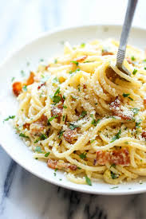

Ingredients
- 200g spaghetti
- 100g guanciale (or pancetta), cubed
- 2 large eggs
- 50g Pecorino Romano cheese, grated
- Black pepper, freshly ground
- Salt
Instructions
- Bring a large pot of salted water to a boil. Add the spaghetti and cook according to package directions until al dente.
- While the pasta is cooking, gently fry the guanciale in a pan over medium heat until crispy. Remove from the heat and set aside, reserving some of the rendered fat.
- In a bowl, whisk together the eggs, grated Pecorino Romano cheese, and a generous amount of freshly ground black pepper. Add a tablespoon or two of the reserved guanciale fat and whisk again.
- Drain the spaghetti, reserving about a cup of the pasta water.
- Add the hot spaghetti to the pan with the guanciale. Toss to combine.
- Remove the pan from the heat. Pour the egg and cheese mixture over the hot pasta, tossing vigorously to create a creamy sauce. If the sauce seems too thick, add a little of the reserved pasta water until it reaches the desired consistency.
- Serve immediately, garnished with extra grated Pecorino Romano cheese and black pepper.
Optional Nutritional Information (per serving)
Calories: ~400kcal | Protein: ~18g | Fat: ~25g | Carbohydrates: ~30g